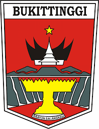

<ion-app>
    <ion-menu menu="main-menu" contentId="main">
        <ion-content>
            <div class="menu-header-bg"></div>
            <div class="header-content">
                
                <label>Layanan Kelurahan</label>
            </div>

            <ion-list lines="none" class="menu-items">
                <ion-item>
                    <ion-icon name="home-outline" routerLink="/home"></ion-icon>Home
                </ion-item>
                <ion-item>
                    <ion-icon name="person-outline" routerLink="/profile"></ion-icon>Profile
                </ion-item>
                <ion-item class="active">
                    <ion-icon name="folder-open-outline"></ion-icon>File Saya
                </ion-item>
                <ion-item>
                    <ion-icon name="list-circle-outline" routerLink="/list-pengajuan"></ion-icon>Pengajuan Saya
                </ion-item>
                <ion-item>
                    <ion-icon name="exit-outline" (click)="logoutAccount()"></ion-icon>logout
                </ion-item>
            </ion-list>
        </ion-content>
    </ion-menu>
    <ion-back-button text="" slot="end"></ion-back-button>
    <ion-router-outlet id="main"></ion-router-outlet>
</ion-app>